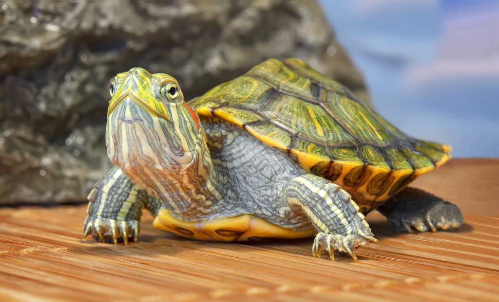

Buddy
Buddy es un grandioso amigo del hombre lo conocimos desde que tenia 2 meses, es muy jugueton, le encanta jugar con los niños.

Franklin
Este es Franklin, tiene de estar en nuestra familia desde hace 7 años, le encanta comer y dar vueltas en su pecera, tambien tiene una hora especifica en el dia donde le encanta tomar el sol.

Michi
Este hermoso gato con nombre michi es muy jugueton, pero a la vez es perezoso y comelon, le encanta mucho su juguete en forma de raton, no le gusta que lo molesten cuando esta comiendo.